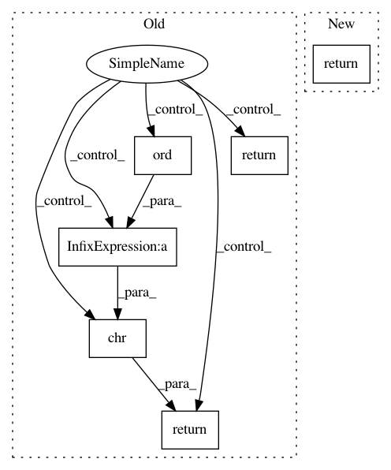

155686c863a95139f8683b77d9d030a8d3654441,perfkitbenchmarker/gcp/gce_virtual_machine.py,GceVirtualMachine,GetLocalDrives,#GceVirtualMachine#,164
Before Change
drives on the VM (e.g. "/dev/sdb").
match = re.search("([0-9])x-ssd", self.machine_type)
if match:
num_ssd = int(match.group(1))
return ["/dev/sd%s" % chr(ord(DRIVE_START_LETTER) + i)
for i in xrange(num_ssd)]
else:
return []
def SetupLocalDrives(self, mount_path=virtual_machine.LOCAL_MOUNT_PATH):
Set up any local drives that exist.
After Change
A list of strings, where each string is the absolute path to the local
drives on the VM (e.g. "/dev/sdb").
return ["/dev/disk/by-id/google-local-ssd-%d" % i
for i in range(self.num_ssds)]
def SetupLocalDrives(self, mount_path=virtual_machine.LOCAL_MOUNT_PATH):
Set up any local drives that exist.
In pattern: SUPERPATTERN
Frequency: 3
Non-data size: 6
Instances
Project Name: GoogleCloudPlatform/PerfKitBenchmarker
Commit Name: 155686c863a95139f8683b77d9d030a8d3654441
Time: 2014-12-03
Author: ehankland@google.com
File Name: perfkitbenchmarker/gcp/gce_virtual_machine.py
Class Name: GceVirtualMachine
Method Name: GetLocalDrives
Project Name: openai/gym
Commit Name: e84bd0ffe1f98efca057dde34244a82fa6486090
Time: 2016-10-21
Author: colin.morris2@gmail.com
File Name: gym/envs/algorithmic/algorithmic_env.py
Class Name: AlgorithmicEnv
Method Name: _get_str_obs
Project Name: openai/gym
Commit Name: e84bd0ffe1f98efca057dde34244a82fa6486090
Time: 2016-10-21
Author: colin.morris2@gmail.com
File Name: gym/envs/algorithmic/algorithmic_env.py
Class Name: AlgorithmicEnv
Method Name: _get_str_target